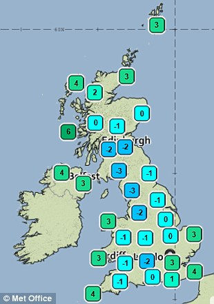

Wednesday, August the 13th, 2014
back to: title, date or indexes
One of the BBC's regular weather forecasters is Stav Danaos. This always sounds to me like a name from Game Of Thrones. One imagines Stav hanging out with, say, Stannis Baratheon or Daenerys Targaryen. That being so, it is somewhat puzzling that his weather forecasts do not consist simply of the words “winter is coming”, every day.
